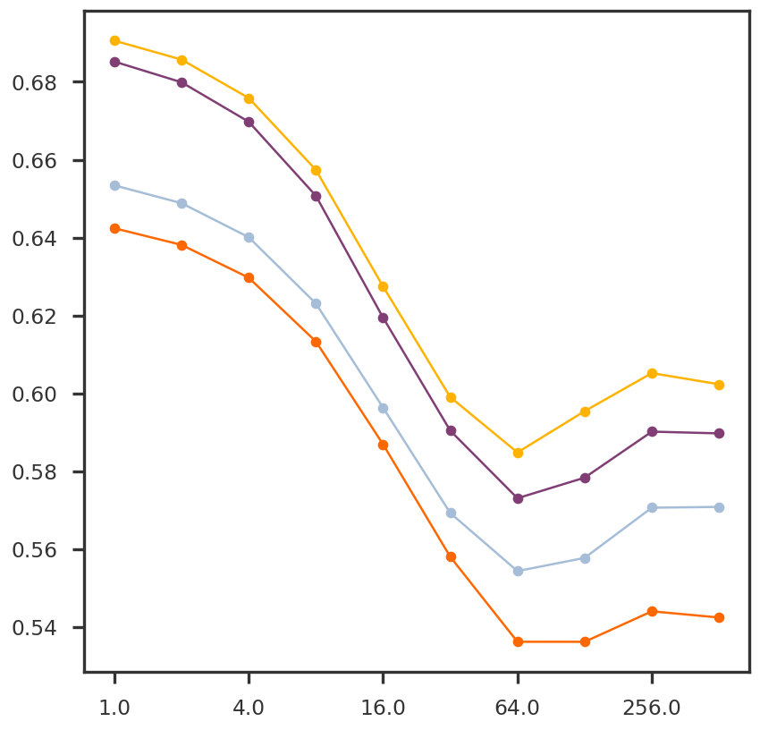

Write a CV class for NNM with Frank-Wolfe algorithm
About
I mask random elements of the input matrix and perform matrix completion using NNMFW. The minimum error for the masked elements in the recovered matrix is used for cross-validation.
Code
import numpy as npimport pandas as pdimport matplotlib.pyplot as pltfrom pymir import mpl_stylesheetfrom pymir import mpl_utilsmpl_stylesheet.banskt_presentation(splinecolor ='black', dpi =120, colors ='kelly')import syssys.path.append("../utils/")import histogram as mpy_histogramimport simulate as mpy_simulateimport plot_functions as mpy_plotfnfrom nnwmf.optimize import NNMFW_CVfrom nnwmf.optimize import NNMFW
def psnr(original, recovered): n, p = original.shape maxsig2 = np.square(np.max(original) - np.min(original)) mse = np.sum(np.square(recovered - original)) / (n * p) res =10* np.log10(maxsig2 / mse)return resdef masked_rmse(original, recovered, mask): n = np.sum(mask) mse = np.sum(np.square((original - recovered) * mask)) / nreturn np.sqrt(mse)def generate_rseq(Y): r_min =1 r_max = np.linalg.norm(Y, 'nuc') nseq =int(np.floor(np.log2(r_max)) +1) +1 r_seq = np.logspace(0, nseq -1, num = nseq, base =2.0)return r_seqdef generate_mask(Y, folds =1, test_size =0.33): n, p = Y.shape O = np.ones(n * p) ntest =int(test_size * n * p) O[:ntest] =0 np.random.shuffle(O)return O.reshape(n, p) ==0def generate_fold_labels(Y, folds =2, test_size =None, shuffle =True): n, p = Y.shape fold_labels = np.ones(n * p) ntest =int ((n * p) / folds) if test_size isNoneelseint(test_size * n * p)for k inrange(1, folds): start = k * ntest end = (k +1) * ntest fold_labels[start: end] = k +1if shuffle: np.random.shuffle(fold_labels)return fold_labels.reshape(n, p)def generate_masked_input(Y, mask): Ymiss_nan = Y.copy() Ymiss_nan[mask] = np.nan Ymiss_nan_cent = Ymiss_nan - np.nanmean(Ymiss_nan, axis =0, keepdims =True) Ymiss_nan_cent[mask] =0.0return Ymiss_nan_centdef nnmfw_cv(Y, folds =2, r_seq =None):if r_seq isNone: r_seq = generate_rseq(Y) rmse_dict = {r: list() for r in r_seq} fold_labels = generate_fold_labels(Y, folds = folds)for fold inrange(folds): mask = fold_labels == fold +1 Ymiss = generate_masked_input(Y, mask)for r in r_seq: nnm_cv = NNMFW(suppress_warnings =True) nnm_cv.fit(Ymiss, r, mask = mask) rmse = masked_rmse(Y, nnm_cv._X, mask) rmse_dict[r].append(rmse)return rmse_dict
Code
rmse_dict = nnmfw_cv(Y_cent, folds =5)
Code
fig = plt.figure()ax1 = fig.add_subplot(111)for k inrange(4): ax1.plot(np.log10(list(rmse_dict.keys())), [x[k] for x in rmse_dict.values()], 'o-')mpl_utils.set_xticks(ax1, scale ='log10', spacing ='log2')plt.show()

Code
mean_err = {k: np.mean(v) for k,v in rmse_dict.items()}
fig = plt.figure()ax1 = fig.add_subplot(111)for k inrange(2):#ax1.plot(np.log10(list(nnmcv.training_error.keys())), [x[k] for x in nnmcv.training_error.values()], 'o-') ax1.plot(np.log10(list(nnmcv.test_error.keys())), [x[k] for x in nnmcv.test_error.values()], 'o-') ax1.plot(np.log10(list(rmse_dict.keys())), [x[k] for x in rmse_dict.values()], 'o-')mpl_utils.set_xticks(ax1, scale ='log10', spacing ='log2')plt.show()